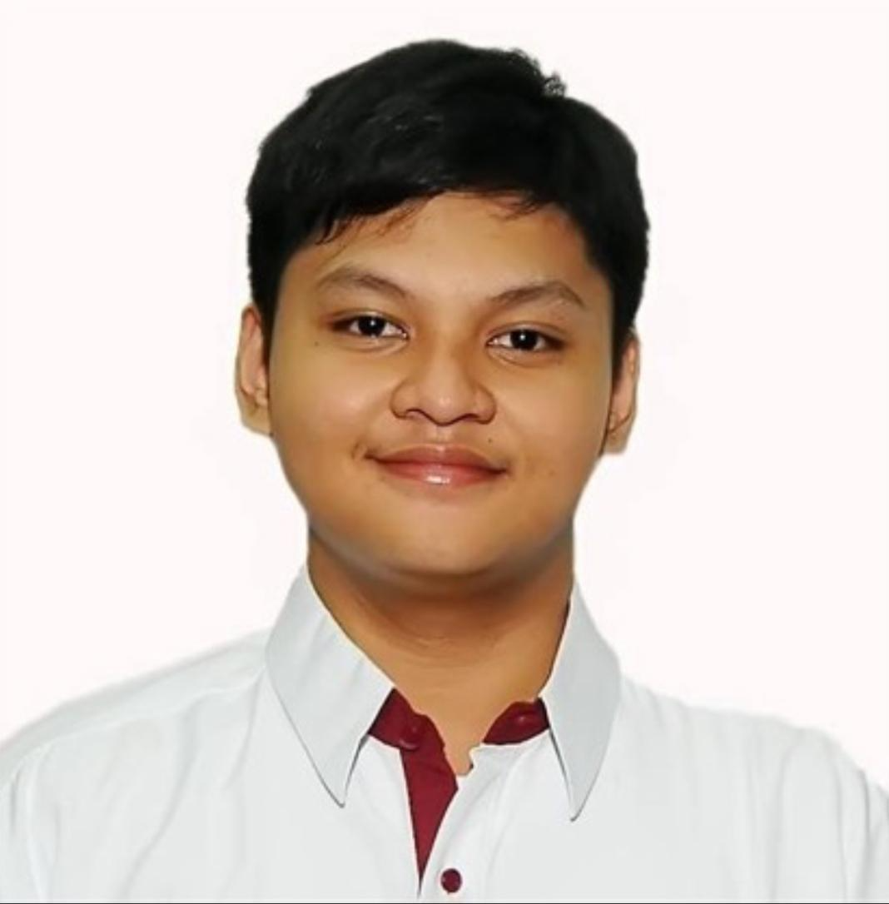

A Little About Me

I'm a 3rd year BS Information Technology student at Lyceum of the Philippines University – Manila. I'm motivated, hardworking, and always eager to learn something new, whether it's in the classroom, at the gym, or on the guitar.
My plan is simple: finish my degree, gain real experience as an IT professional, and one day build a business of my own in the IT field.
Basic Information
- Name
- Jerence Christmir R. Brosas
- Age
- 20 years old
- Course
- BS Information Technology
- School
- Lyceum of the Philippines University – Manila
- Year Level
- 3rd Year College
My Hobbies
Outside of school, I like to spend my free time doing the things that keep me balanced and happy. Here's what I usually do, in order of how often I do them:
- Going to the gym
- Watching movies
- Playing guitar
I believe that discipline and consistency are what separate people who dream from people who achieve.